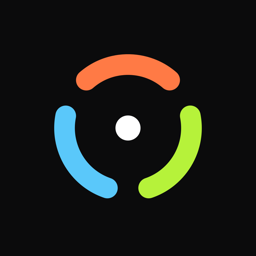

カロリング
撮るだけで、毎日のバランスが整う。
食事の写真からAIがカロリー・PFC・栄養を計算し、歩数と睡眠を合わせて「食べた・動いた・休んだ」の3つのリングで1日を見せる、写真で食事記録できるカロリー計算アプリです。
食べた写真1枚でカロリーとPFCを記録
動いた歩数と運動を自動で反映
休んだ睡眠と気分をふりかえる
主な機能
- 写真1枚でカロリー・タンパク質・脂質・炭水化物をAIが計算（量の調整・手入力も可能）
- 3つのリングが閉じた日は「バランスデー」。バッジと連続記録で続けやすい
- ダイエット・健康維持・体づくりなど、目的に合わせて目標とAIのアドバイスが変わる
- 食事や運動の悩みをAIに相談
- 1週間〜1年のカロリー・運動・体重のふりかえりと、週次のAIレビュー
- Apple ヘルスケア / Health Connect 連携（歩数・睡眠・体重）
料金
すべての機能を無料で使えます。回数が足りない日は、広告を見ると今日のAIの回数を増やせます。広告は自分で選んだときだけ表示されます。広告なしで回数を増やしたい方には「カロリング Premium」があります。
ヘルスケアのデータを広告に使うことはありません。カロリングは医療機器ではなく、診断・治療・減量などの成果を保証するものではありません。